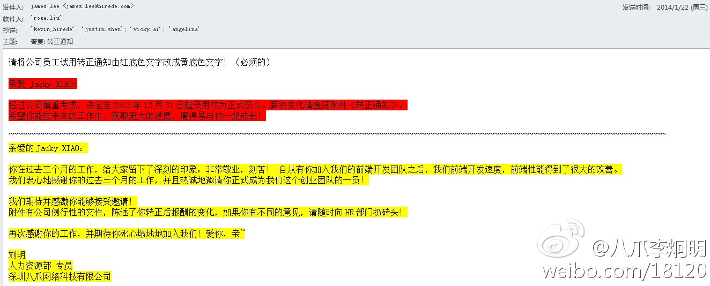

被AT了150多次，吐槽的人真多啊。公司的财务和HR部门，容易以居高临下的管理者角色出现，而不是以服务者心态对待员工。可能跟国情有关，咱们国家所谓的“公仆”，实际上是作威作福的官老爷。@八爪李炯明:#员工转正通知# 今天打开邮箱，收到HR部门发给前端开发工程师的转正邮件，我忍无可忍改写了一个“转正通知”。 HR人员经常错误代表公司的利益与价值，用公司的口吻“通知”员工，这是错误！ 要发自内心感谢员工，以及明确地感谢他们所做的事情！@Easy @pi1ot @Fenng @范凯robbin @Ada李力 